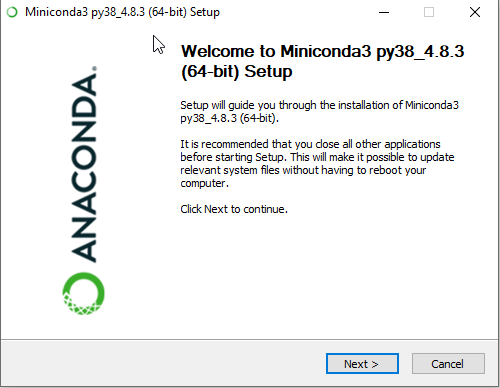
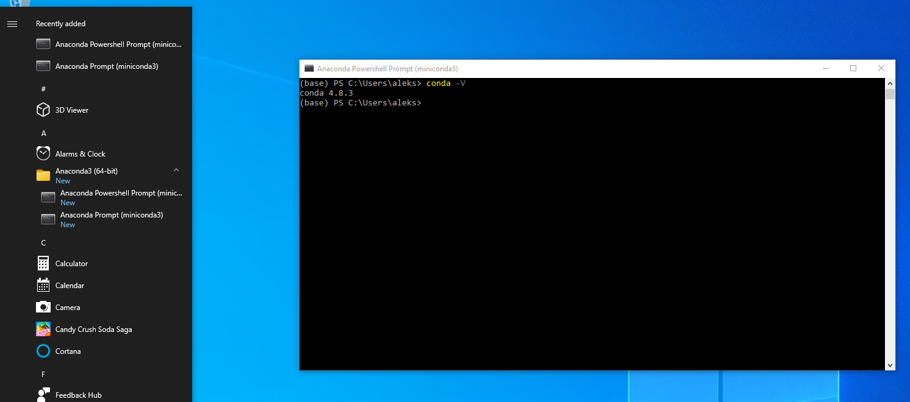
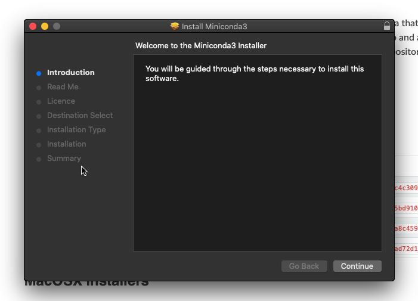
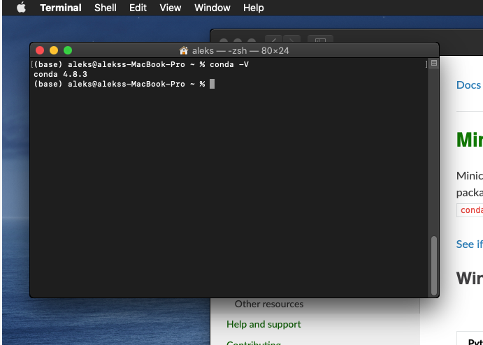
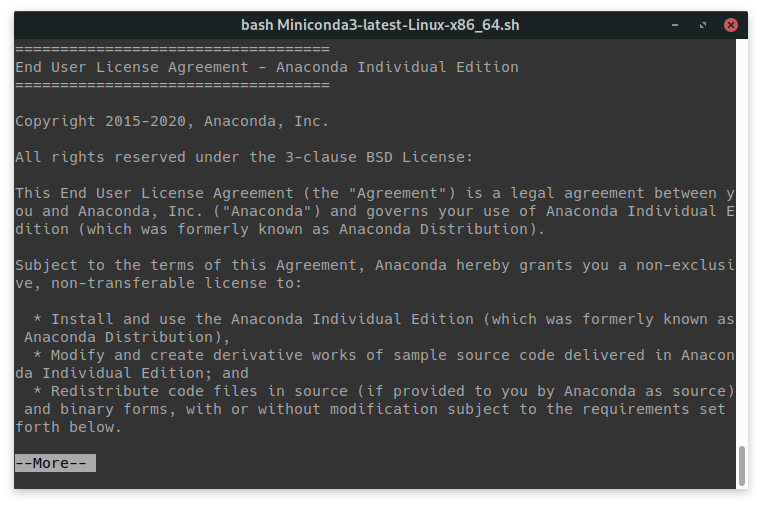
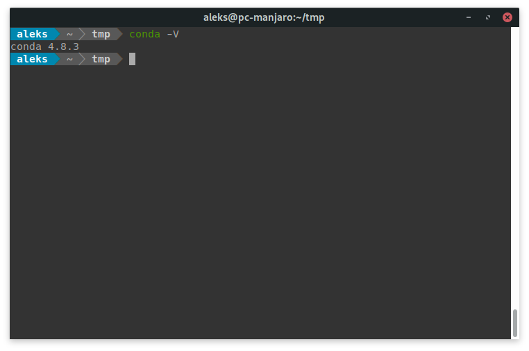
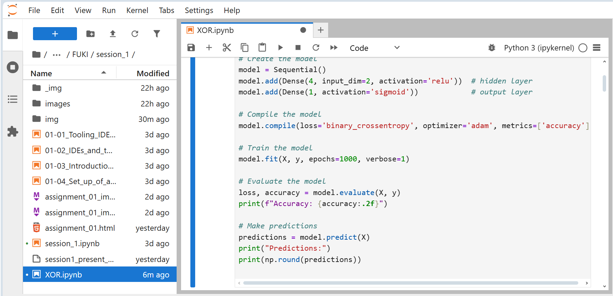
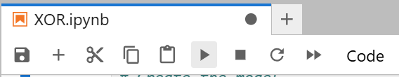

Deadline: 04/29/2025
Please follow the instructions below to install Conda.
Get familiar with the Shell-Commands cd, ls, pwd and mkdir.
Create a Conda environment called fuki with the packages python=3.10, jupyterlab and tensorflow installed.
Launch the jupyter notebook XOR.ipynb and execute the keras script.
All information needed should be available below.
If you should have any Questions don't hesitate to state them in our Webex-Teams channel!
ls
pwd
cd
mkdir
We use Python throughout the class. We further use some additional packages, installing them individually can be unnecessarily complicated. Hence, we recommend installing Miniconda, which comes with Python (please use 3.x) and the package manager Conda.
(Note that Conda is a part of the Anaconda distribution. If you are already using the Anaconda distribution you may skip installing Miniconda!)
Download the installer for Python 3.x, for your OS-Architecture (probably 64bit) and run it.
You can click on continue in each step.

You should now find two freshly installed programs, in your Start Menu, in the Anaconda3 (64-bit) directory.
Both spawn a terminal window from which the conda command is accessible.
Please use the Anaconda Powershell Prompt (instead of the Anaconda prompt) , as that one also allows inputting typical commands from the UNIX world (macOS, Linux, etc.).

Download the Python 3.x pkg installer and run it.
You can click on continue in each step.

conda command.
Open a terminal window and enter the following command:
wget https://repo.anaconda.com/miniconda/Miniconda3-latest-Linux-x86_64.sh
In case you don't have wget installed, please use the following command instead:
curl https://repo.anaconda.com/miniconda/Miniconda3-latest-Linux-x86_64.sh > Miniconda3-latest-Linux-x86_64.sh
Run the following command to start the installation:
bash Miniconda3-latest-Linux-x86_64.sh
You will be prompted to press ENTER, do that.
Afterwards the EULA will be displayed. Press q to quit reading it.

Enter yes and confirm with ENTER to accept the terms.
Next you will be asked to specify the installation path, press ENTER to use the default one.
Now the installer asks whether to initialize miniconda3. Enter yes and confirm with ENTER
After you completed the installation, with the next start of a terminal window you will be able to use the conda command.

Hint: You can paste commands into the terminal using:
Windows: CTRL + V
macOS: CMD + V
Linux: CTRL + SHIFT + V
Hint: You can autocomplete commands and arguments using TAB.
Hint: You can interrupt command execution using CTRL + C (e.g. if Conda gets stuck)
lsls lists all files and directories in your current path.
(base) aleks@pc$ ls
Desktop Documents Downloads miniconda3 Music Pictures Public Uni Videos
pwdpwd returns your current path. Very useful if you should get lost!
(base) aleks@pc$ pwd
/home/aleks
cdcd (change directory) moves you into a specified directory
.. states "one directory above". Thus by using cd .. you can switch to one directory above.
(base) aleks@pc$ ls
Desktop Documents Downloads Music Pictures Public Uni Videos
(base) aleks@pc$ pwd
/home/aleks
(base) aleks@pc$ cd Uni
(base) aleks@pc$ pwd
/home/aleks/Uni
(base) aleks@pc$ cd ..
(base) aleks@pc$ pwd
/home/aleks
When starting a terminal window your path will be set to your Home-Directory. Depending on which Operating System you use the path-names will look different.
Windows (C:\Users\username):
C:\Users\aleks> pwd
Path
----
C:\Users\aleks
macOS (/Users/username):
aleks@macOS$ pwd
/Users/aleks
Linux (/home/username):
aleks@linux$ pwd
/home/aleks
Luckily we can use the same command on each OS to get back to our Home-Directory, i.e. cd ~ or cd $HOME.
(base) aleks@pc$ cd aa/bb/cc/dd
(base) aleks@pc$ cd $HOME
(base) aleks@pc$ pwd
/home/aleks
mkdirmkdir stands for make directory.
aleks@pc$ ls
course_a course_b
aleks@pc$ mkdir ML_python
aleks@pc$ ls
ML_python course_a course_b
We suggest creating a folder for each lecture/session, e.g.:
aleks@pc$ pwd
/home/aleks/Uni/ML_python
aleks@pc$ mkdir 01-2025-04-22
WARNING
Please make sure to not use spaces when naming files and directories! As the terminal separates arguments between spaces.
aleks@pc$ mkdir ML python
aleks@pc$ ls
course_a course_b ML python
We now have created two different directories!
To cd into a directory with spaces in the name, put quotation marks (" or ') around it
aleks@pc$ ls
'dir with spaces' dir_a dir_b
aleks@pc$ cd 'dir with spaces'
aleks@pc$ pwd
/home/aleks/dir with spaces
As mentioned before Conda allows us to install Python packages easily, while making sure the package versions work well with another.
Conda also allows us to create virtual environments, i.e. a separated collection of packages.
The main idea behind that is to save a state in which we are able to run a project. When revisiting a project in the future some packages may have gotten updated, resulting in the project not running at all or in a different manner. Keeping an environment per project allows to restart the project with exactly the packages with which it has worked in the past!
It is recommended to add the Conda-forge channel to your Conda channels, so we can install community packages:
conda config --add channels conda-forge
Once you have installed the Conda package manager, we create a virtual environment by installing Python and all other packages of interest.
Creating an Conda environment with the name fuki
conda create -n fuki
The default Conda environment is base, to switch to the newly created environment use conda activate environment_name:
(base) aleks@pc$ conda activate fuki
(fuki) aleks@pc$
After doing this you can see the changed environment in your Shells' prefix.
With the right environment activated you can use conda install package_1 package_2 [..] to install packages:
(fuki) aleks@pc$ conda install python=3.10 jupyterlab tensorflow
Conda will automatically install all packages on which the chosen ones depend.
conda env remove -n environment_name
Note: this will be used later in the lecture and is not part of the assignment
Once you have installed the Conda package manager, you may create a virtual environment by instructions within a file (e.g. environment.yml). This allows you to recreate an existing environment from another machine.
Move to your working directory (use cd) and make sure the environment.yml is available (use ls) and type one of the following command:
conda env create -f environment.yml
Further you may use the Python module pip for downloading additional packages from PyPi, the Python Package Index.
Packaging in Python is still not yet completely free of pain, hence it is recommended to stay - if possible - within one realm (in our case Conda!), when you start to build more complex and sophisticated software.
You can start Jupyter Lab by typing the command jupyter lab in the anaconda shell:
(fuki) aleks@pc$ jupyter lab
Use the menu on the leftside to navigate to the location you downloaded the file XOR.ipynb

Launch it using the Play Button on the top or by typing SHIFT-ENTER after selecting the cell:
